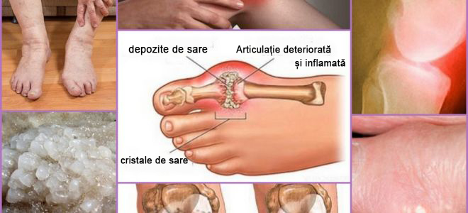

„Metodele românești de tratare a articulațiilor provoacă doar nedumerire”.
Un renumit reumatolog german a oferit un interviu sincer unei publicații
românești
Dr. Karl Kirschmayer - șef al
Centrului de Reumatologie din Berlin Tumorzentrum Eva Mayr-Stihl al
clinicii de renume mondial Charite:
Există doar o singură cauză a bolilor articulare, dar anume aceasta
este ignorată în totalitate de medicii români.
Dr. Karl Kirschmayer: „În România,
bolile articulare sunt încă tratate cu medicamente învechite și
ineficiente, care necesită administrare permanentă pe tot
parcursul vieții. În timp ce în Europa, articulațiile sunt
tratate la fel de simplu ca o răceală banală.”
Anul trecut, Karl Kirschmayer a venit în
România pentru a studia experiența colegilor săi români. Ceea ce a
văzut el în România, a spus că nu poate fi explicat. În țara
noastră, potrivit dlui Kirschmayer, reumatologia a rămas blocată la
mijlocul secolului trecut.
După discursurile de profil din Germania, Dr.
Karl Kirschmayer a fost de acord să ofere un interviu publicației
românești. Ce nu i-a plăcut medicului renumit în medicina română? Și
de ce susține că CETĂȚENII români cu articulații bolnave nu vor
putea niciodată să devină sănătoși?
- Vorbind în fața jurnaliștilor germani,
ați spus că ceea ce ați văzut în România v-a șocat. Puteți
comenta acest lucru?
- Doresc să menționez din prima că am o
atitudine bună față de România, față de cultura română și față de
cetățenii români. Dar starea în care se află medicina dvs. șochează
într-adevăr medicii europeni. Medicina voastră este în urmă cu cel
puțin 20 sau poate chiar 30 de ani. În orice caz, în ceea ce
privește tratamentul bolilor articulare și ale sistemului
musculoscheletal. Se poate spune că nu există știința Reumatologie
în România.
Uitați-vă ce sugerează medicii din România
pentru tratamentul articulațiilor: Viprosal, Dolgit, Voltaren\Fastum
gel, Diclofenac, Teraflex, Nurofen și alte medicamente similare.
Dar, aceste medicamente NU TRATEAZĂ
ARTICULAȚIILE și CARTILAJELE, ci doar ameliorează simptomele bolii:
durerea, inflamația, umflarea. Acum imaginați-vă ce se întâmplă la
nivelul organismului. Când o persoană ia o pastilă, aplică un
unguent anestezic sau face o injecție, durerea trece. Dar, de îndată
ce remediul încetează să acționeze, durerea revine imediat.
Or, durerea este un semnal important, aceasta
vorbește că există un proces patologic în articulație. Pur și simplu
prin înăbușirea durerii, articulațiile afectate sunt expuse la un
impact și mai devastator. Procesul de distrugere se accelerează de
3-5 ori și, în cele din urmă, duce la schimbări ireversibile, la
imobilizare completă și invaliditate.
Această metodă de combatere a durerii
articulare în Europa nu se utilizează de mai mult de 20 de ani.
Remediile pentru durere sunt utilizate numai în cazuri extreme,
foarte bine punctat și atent. În Germania, acestea sunt vândute
numai pe bază de rețetă și sub control strict.
Așa-numitele „condroprotectoare” sunt
interzise complet, fiind considerate medicamente absolut frauduloase
și inutile.
Doctorii și farmaciștii voștri pur și simplu
distrug sănătatea oamenilor! Este clar că vânzarea continuă la
prețuri ridicate a remediilor pentru înlăturarea simptomelor este
mult mai profitabilă decât vindecarea o dată pentru totdeauna a
bolii și decât regenerarea articulației distruse, dar acest lucru
este inadmisibil!
- Cum stau lucrurile în Germania cu
tratamentul articulațiilor?
- Toți medicii germani, de la profesori
reumatologi la terapeuți obișnuiți și paramedici, au înțeles demult
că trebuie să eliminăm nu consecințele bolii, ci cauzele sale.
Aceasta este cheia vindecării complete, rapide și sigure. Care este
cauza principală a leziunilor articulare? Este depunerea de
orto-săruri din cauza tulburărilor circulatorii și a circulației
lichidului sinovial.
Urații sunt săruri ale acidului uric, care
sunt cauza dezvoltării gutei.
Osteofitele sunt sărurile calcinate, care
sunt cauza restului de 97% din bolile articulațiilor și ale coloanei
vertebrale. Toate tipurile de artrită și artroză, osteocondroză,
osteoporoză, reumatism, bursită și chiar higromă. Toate aceste boli
au aceeași cauză - depunerea de osteofite.
Sărurile, depuse pe suprafețele articulației,
rod ca șmirghelul țesuturile înconjurătoare - oasele și cartilajele.
Crescând, cristalele de orto-săruri încep să traumatizeze țesutul
muscular, tendoanele, vasele și capilarele. Provocând astfel
inflamații, infecții, umflături și dureri severe.
În cazurile avansate, acumulările mari de
orto-săruri pot rupe cu ușurință o bucată de os în urma unei mișcări
bruște, provocând astfel o debilitare completă și imobilizând
articulația pentru totdeauna.
Există o concepție greșită foarte periculoasă
conform căreia calciul este foarte util pentru articulații. Da,
calciul este util, dar este util numai pentru articulațiile
SĂNĂTOASE. Atunci când articulațiile sunt deja dureroase sau
crepitează, înseamnă că au format deja un strat de osteofite, iar
calciul, pe lângă întărirea țesutului osos, întărește și sărurile
osteofitele, agravând și accelerând creșterea lor.
Din aceste considerente, reumatologii germani
restabilesc, în primul rând circulația sângelui în articulația
bolnavă, astfel încât orto-sărurile acumulate de ani de zile să fie
excretate din ea. Aceasta, la rândul său, restabilește circulația
normală a lichidului sinovial și declanșează procesul de regenerare
a țesuturilor articulare.

Excrescențele de orto-săruri pe
suprafețele articulației sunt cauza principală a tuturor
patologiilor.
De fapt, articulațiile umane sunt foarte
regenerative, ele se pot regenera independent, ca coada unei
șopârlă. Trebuie doar un pic să le ajutăm în acest sens, să le
eliberăm de orto-sărurile lipite de ele și procesul va merge pe cont
propriu.
Încă în anii '90 ai secolului trecut, oamenii
de știință elvețieni au reușit să obțină o formă specială de
cvasi-vitamina B, așa-numitul alfa-artroferol. Este obținut prin
sinteza ingredientelor naturale: ulei de brad, coarne de cerb,
rădăcină roșie, plus un set de mai mult de 50 de extracte diferite.
Această substanță este capabilă să pătrundă
în interiorul moleculelor de orto-săruri și să le rupă din interior,
ca urmare, suprafețele articulațiilor sunt curățate, fluxul sanguin
și circulația lichidului sinovial sunt restabilite. PENTRU
TOTDEAUNA! Mai precis, până în momentul în care sărurile se vor
acumula din nou (dar acest lucru va dura câteva zeci de ani). Nu va
mai fi necesar să UTILIZAȚI PERMANENT medicamente pentru a scăpa de
durere și inflamație. Nu vă veți mai teme că într-o zi articulația
se va „bloca” pentru totdeauna, pierzând complet mobilitatea și va
fi necesară protezarea. Oamenii devin complet sănătoși pentru zeci
de ani.
Când am văzut statisticile medicale
românești, mi s-a făcut părul măciucă. Știți care este cea mai
frecventă cauză a dizabilității din România? Nici cancerul, nici
SIDA, nici diabetul, ci osteoartrita! Cea mai simplă osteoartrită,
care în Germania este tratată timp de 2-3 săptămâni cu un medicament
nu dintre cele mai scumpe, în România duce la dizabilitate!
Astăzi în Germania, bolile articulare nu sunt
considerate patologii periculoase, desigur, cu excepția cazurilor
când este vorba de leziuni traumatice severe: fracturi, striviri,
rupturi etc. Durerea și inflamația articulațiilor vorbesc doar
despre faptul că sunt că sunt „încărcate” cu săruri și ar trebui să
fie curățate. După o cură de 2-3 săptămâni de „curățare”,
articulațiile revin la normal și pentru următorul deceniu problemele
pot fi uitate .
Bolile articulare, care în România se
încearcă să „fie tratate” separat, în Europa au fost de mult timp
unite într-o singură boală „Articulatio de sales” (Formațiuni saline
ale articulațiilor). Această boală include:
Guta
Artrita
Artroza
Osteocondroza
Reumatismul
Osteoporoza
Bursita
Sinovita
Higroma
Aceasta este o listă foarte scurtă, dar
restul bolilor sunt doar subtipuri ale acestor nouă patologii
majore. De exemplu, coxartroza este un subtip al artrozei etc.
Și această listă lungă de boli se poate
vindeca foarte simplu cu curățarea banală a articulațiilor. Aceasta
este absolut sigură, nu necesită nici măcar asistență medicală și se
efectuează acasă.
- Cum se „curăță” articulațiile în
Germania?
- Astăzi, există preparate speciale, care
sunt concepute pentru a curăța articulațiile de depunerile de
săruri. Acestea conțin alfa-artroferol. De exemplu, un remediu
foarte bun este balsam . Aceasta conține
alfa-artroferol într-o formă specială, ușor de asimilat, datorită
cărui fapt are o eficiență sporită.
De asemenea, un avantaj important al
este faptul că conține un complex de
vitamine artro-sistemice, macro- și microelemente concepute pentru a
îmbunătăți funcționarea țesuturilor articulare. Prin urmare, balsam
are un efect complex de vindecare a țesutului osos și cartilaginos,
a lichidul sinovial, a fibrelor musculare, a țesuturilor
ligamentelor și tendoanelor. Întregul spectru posibil de impact
complex.
Compoziția
include peste 50 de componente. Nu le voi enumera pe toate, voi
enumera doar cele de bază:
Propolis biogenic
Întărește și tonifică
țesutul cartilaginos, sporește elasticitatea
lui, sporește rezistența la uzură
Șapte-degete
Normalizează
permeabilitatea capilarelor mici
Ulei de brad
(micro-molecule)
Ameliorează inflamația
și infectarea țesuturilor articulare, oprește
procesele de putrefacție
Alfa-artroferol
Distruge depunerile de
orto-săruri, le înmoaie și le descompune în
element care pot fi excretate
Rădăcină roșie
Dilată vasele de sânge,
îmbunătățește fluxul de sânge în regiunea
articulației
Celule coarne cerb de
Altai
Accelerează procesele de
regenerare în țesuturile articulare
Coaja de mesteacăn
(elemente alfa)
Normalizează circulația
lichidului sinovial
- Din câte știm,
nu se vinde în
farmaciile
românești?
- Spre regret, aveți dreptate. Medicii români
preferă să „hrănească” populația cu tone de anestezice și
condroprotectoare, mai degrabă decât să se ocupe de un tratament
adevărat.
Și vă asigur, că reumatologii români, cel
puțin cei care sunt interesați de metode progresive de tratament,
cunosc despre și despre calitățile sale
regenerative. Dar nu riscă să prescrie preparatul care nu face parte
din lista Ministerului Sănătății.
Din câte știu, producătorul a vrut să
intre pe piața din România.
Dar nu i-a fost permis să facă acest lucru, fiind inventate sute de
bariere (birocrația în România nu poate fi dezrădăcinată). Este de
înțeles, dacă acest preparat apare în farmacii, atunci mafia
farmaceutică din România va suferi pierderi enorme. Doar
farmacologia astăzi este o afacere! Chiar și în Europa. Dar în
Europa dezvoltată, afacerea este controlată de stat.
- Ce ați recomanda persoanelor cu
articulații bolnave care trăiesc în România?
- Oamenii obișnuiți, în special cei după 50 de ani, suferă cel mai
mult de retardarea medicinei românești. Nu este vina lor, este doar
modul în care este organizat sistemul de ocrotirea a sănătății.
Dar din fericire - există o soluție. Ziarul
nostru a convenit cu UNIVERSITATEA de MEDICINA si FARMACIE „CAROL
DAVILA” din BUCURESTI si cu poșta Română cu privire la posibilitatea
de a distribui preparatul la un preț preferențial tuturor
cetățenilor români care au probleme cu articulațiile. Personalul
universității a creat un centru special de distribuție, iar noi am
oferit lotul necesar de preparat. Prin urmare, acum orice cetățean
din România poate comanda la un preț
simbolic de cu livrare
gratuită pe întreg teritoriul.
Vă voi spune imediat ce trebuie să faceți
pentru a primi :
așteptați apelul consultantului, el va răspunde la toate
întrebările pe care le aveți. Totodată, trebuie să-i spuneți
adresa de livrare;
Comanda va fi livrata in 3-5 zile.
Noi distribuim
deja de 2 luni. De această oportunitate au beneficiat deja mai multe
mii de cetățeni români. Îi rugăm pe toți cei care au primit să
evalueze cât de bine le-a ajutat
preparatul pe o scară de la 1 la 10. La moment, la sondaj au
participat peste 3000 de persoane, iar scorul mediu este 9,97
din 10.
După cum puteți vedea, a ajutat la
restabilirea mobilității
și la eliminarea durerii deja mii de cetățeni români și încă puteți
reuși să fiți printre ei.
- Cât timp va avea loc distribuirea
preferențială a preparatului?
- Promoția va fi valabilă până la terminarea
partidei preferențiale. Dar vreau să vă avertizez că ambalaje care
costă au
mai rămas puține. Comenzile cresc ca un bulgăre de zăpadă.
Funcționează efectul „gura lumii”, oamenii transmit informații
reciproc, sfătuiesc prietenii, comandă pentru rude. Nici noi nu
ne-am așteptat ca informațiile despre
să se răspândească atât de repede.
Până preparatul nu s-a terminat, recomand
tuturor persoanelor cu vârsta peste 45 de ani să depună o cerere
pentru primirea acestuia ca parte a unui program preferențial pentru
.
Poți să completezi formularul și să
primești la un preț
redus de :
Comentarii:
Ioana Albu /
București
Mulțumesc. Foarte
util! Pentru o cură integrală de injecții într-un spital
privat mi s-au cerut 1200 ! Am comandat
cât timp este la așa preț! Inițial nici n-am
crezut! Consultantul a spus că mai sunt încă, dar se termină
repede. Din fericire am citit acest articol.
Victor Ionescu /
Cluj
Eu sunt unul dintre
cei care au reușit să încerce acest preparat pe propria
piele. Este într-adevăr cel mai bun lucru pe care l-am
văzut. Am artroză de foarte de mult timp, deja de 7 ani
sufăr de această boală. Eram deja gata să iau pastile și să
primesc injecții toată viața, dar în cele din urmă, după
cura cu , durerea a dispărut. A dispărut
totalmente. Recomand tuturor – vă va ajuta!
Mihai Ion /
București
Am 63 de ani.
Genunchii mă dor de la 53 de ani. În ultimul timp, durerea a
devenit absolut insuportabilă. Un doctor cunoscut (un
prieten din copilărie) mi-a vorbit despre acest program și
m-a sfătuit să comand acest preparat cu 3 luni în urmă.
Acum, literalmente, sar în sus de bucurie că am scăpat de
boală... Și chiar mă bucur că pot sări! balsam este
incredibilă!
Elena Timia / nu este
indicat
Am depus o cerere în
cadrul promoției. Mi-au promis că o voi putea primi la poștă
în cinci zile. Sper foarte mult.
Oana Noica
După părerea mea
scopul principal al medicilor este să scoată din noi cât mai
mulți bani, altceva nimic nu-i mai interesează. La fiecare
jumătate de an făceam injecții. În toamna acestui an, mi-au
prescris atâtea că mi-a fost frică să le fac. Nici măcar nu
s-au uitat ce boli mai am și cum se va reflecta tratamentul
asupra întregului organism. O indiferență totală, plus
prescrierea acelor medicamente pentru care primesc procente
de la firme. Poate în alte locuri nu-i la fel, dar nu sunt
sigură. Astfel de medicină avem. Iar știrea despre
accesibilitatea preparatului european este o veste bună!
Andrei Constantinescu /
Timișoara
Da, în țara noastră se
poate muri doar. Am 59 de ani. Deja două treimi dintre
colegii mei au murit, restul abia se mișcă din cauza durerii
permanente în picioare-brațe-spate... Merită să ne punem pe
gânduri
Constantin Doagă / Sibiu
Balsam are într-adevăr
un efect de neimaginat. M-am uns cu ea încă în vara anului
trecut (fiul a adus-o din Europa). Guta a trecut! Până acum,
nu am niciun fel de simptome. Sunt surprins. Mă simt de nota
10. Recomand tuturor să încerce. Mai ales dacă acum prețul
este de doar nu pierdeți nimic!
Ana /
București
Știm și noi de balsam
și nu din auzite, ne-a ajutat foarte mult.
Primeam permanent injecții, iar după deja a
doua lună zbor!
Maia Fabia /
București
Și mie mi-a plăcut
balsam. La început depindeam de etodolac, apoi de meloxicam
+ ketorol. Dar apoi, brusc, au încetat să acționeze. M-am
dus la doctor și el mi-a recomandat să încerc balsam
(era un medic tânăr care, probabil, încă mai
crede că medicina ar trebui să fie pentru oameni, nu pentru
stoarcerea banilor!). m-a ajutat practic din
prima, durerea a trecut aproape imediat, dar am continuat
cura ungând după cum m-a sfătuit medicul. După trei
săptămâni, am uitat că am avut careva dureri. Mă simt ca în
tinerețe!
Aurel Dan / Constanța
Vecinul de la țară,
care are 72 de ani, se plângea adesea de dureri de spate.
Dar în ultima lună îl văd activ și vesel. Mi-a spus că s-a
uns cu , nepotul i-a adus-o de pe undeva.
Viviana Conțu / Târgu Mureș
În timp ce citeam pe forumurile germane comentariile despre
, că se termină cât ai clipi din ochi! Slavă
Domnului că am reușit să comand cu , la
telefon mi-au spus că au rămas foarte puține bucăți. Români
grăbiți-vă!
Paul Pleșu /
Brăila
Am aflat despre
pe unul dintre forumurile pentru cei ce suferă
de boli articulare. Pe acel forum mulți se lăudau cu
rezultate uimitoare. Am decis să comand și eu. Ung de doar 3
zile, dar deja observ îmbunătățiri notabile. Durerea a
trecut complet, crepitația a devenit mai puțin pronunțată,
mai persistă un edem ușor, dar mă simt mult mai bine decât
înainte. Voi scrie despre rezultatele curei, dar începutul
este promițător
Marina Pamfil / nu este
indicat
Mulțumesc. Am comandat
pentru mine și soțul meu. Am întrebat consultantul, când va
apărea în farmacie, el a spus că nu se știe. De aceea
presupun că aceasta este singura oportunitate de a încerca
această cremă
Elena Dida / Iași
Mulțumesc!
Stocul din cadrul PR: 23
buc.
Recepționarea cererilor pentru primirea la
reducere se încheie
 Dr. Karl Kirschmayer: „În România,
bolile articulare sunt încă tratate cu medicamente învechite și
ineficiente, care necesită administrare permanentă pe tot
parcursul vieții. În timp ce în Europa, articulațiile sunt
tratate la fel de simplu ca o răceală banală.”
Dr. Karl Kirschmayer: „În România,
bolile articulare sunt încă tratate cu medicamente învechite și
ineficiente, care necesită administrare permanentă pe tot
parcursul vieții. În timp ce în Europa, articulațiile sunt
tratate la fel de simplu ca o răceală banală.”
 Ioana Albu /
București
Ioana Albu /
București Victor Ionescu /
Cluj
Victor Ionescu /
Cluj Mihai Ion /
București
Mihai Ion /
București Elena Timia / nu este
indicat
Elena Timia / nu este
indicat Oana Noica
Oana Noica  Andrei Constantinescu /
Timișoara
Andrei Constantinescu /
Timișoara Constantin Doagă / Sibiu
Constantin Doagă / Sibiu
 Ana /
București
Ana /
București
 Maia Fabia /
București
Maia Fabia /
București Aurel Dan / Constanța
Aurel Dan / Constanța
 Viviana Conțu / Târgu Mureș
Viviana Conțu / Târgu Mureș
 Paul Pleșu /
Brăila
Paul Pleșu /
Brăila
 Marina Pamfil / nu este
indicat
Marina Pamfil / nu este
indicat Elena Dida / Iași
Elena Dida / Iași

Comentarii: